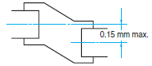
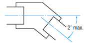
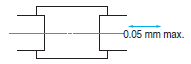

Building Automation
Industrial Automation
Power Automation & Safety


Bangladesh Distributor
Rotary Encoders
|
|
|
|
| Safety Precautions |
For precautions on individual products, refer to Safety Precautions in individual product information.
These products cannot be used in safety devices for presses or other safety devices used to protect human life. These products are designed for use in applications for sensing workpieces and workers that do not affect safety.
Do not use a voltage that exceeds the rated voltage range.
Applying a voltage that is higher than the rated voltage range may cause explosion or burning.
Be sure that the power supply polarity and other wiring is correct.
Incorrect wiring may explosion or burning.
Do not short-circuit the load. Doing so may cause explosion or burning.
Make sure the power is OFF before performing wiring work. If the power is ON and an output wire contacts the power supply, the output circuit may be damaged.
Wire high-voltage lines or power lines separately from Encoder wiring. If high-voltage lines are wired in parallel with Encoder wiring, induction may cause malfunction or damage.
Mounting
Mounting Procedure
Mounting
Do not allow water or oil to splash on the Encoder.
The Rotary Encoder consists of high-precision components.
Dropping the Encoder may damage it. Exercise sufficient caution when handling the Encoder.
When using reverse rotation, check the Encoder mounting direction and the increment/decrement directions before mounting.
When aligning phase Z of the Encoder with the origin of the machine in which the Encoder is installed, be sure to verify phase Z output while mounting the Encoder.
Make sure that an excessive load is not placed on the shaft when the gears engage.
When securing the Rotary Encoder with screws, tighten the screws to a torque of 0.49 Nm.
When using a coupling, do not exceed the following permitted values.
| Eccentricity |  |
| Angle deviation |  |
| Radial displacement |  |
If there are large mounting errors (eccentricity or angle deviation), an excessive load will be placed on the shaft, causing damage and an extremely shortened life.
When connecting with a chain timing belt and gears, hold the shaft with a bearing and use a coupling to join to the Encoder.
E6A2-C
E6B2-C
E6D-C
E6C2-C
E6C3-C[]H
E6C3-A
When inserting the coupling into the shaft, do not tap it with a hammer or apply any other type of shock.
When attaching or detaching the coupling, do not bend, compress, or pull excessively on the coupling.
Life of Rotary Encoder Bearings
The life of bearings when a radial load and thrust load are applied are shown in the following graphs (theoretical value).
E6B2-C
E6C2-C[]
E6C3-C[]H
Wiring
If connecting the cable after securing the Encoder, do not pull on the cable with a force of 29.4 N or greater.
E6A2-C
E6J-A/C
E6B2-C
E6D-C
E6C2-C
E6C3-C[]H
E6C3-A
If connecting the cable after securing the Encoder, do not pull on the cable. Also do not apply shock to the Encoder or shaft.
Connecting
Connection
When extending the cable, check the cable type and response frequency. Wire resistance and capacitance between wires may amplify residual voltage and cause waveform distortions. If the cable is extended, it is recommended to use a line-driver output.
Regardless of the output type, only lengths of 30 m or less comply with the EMC Directive.
To avoid inductive noise, keep the cabling as short as possible (particularly when inputting to an IC).
If surges occur in the power supply, connect a surge absorber between the power supply and the Encoder. To reduce noise, keep the wiring as short as possible.
Spurious pulses may be generated when the power is turned ON or OFF. Wait 0.1 s after turning ON the power before using the connected device, and stop using the connected device 0.1 s (1 s for E6CP-A) before turning OFF the power to the Encoder.
Inrush current will flow when the power is turned ON. Take the value of the inrush current into consideration before using the power supply.
Cable Extension Characteristics
When the cable length is extended, the output waveform startup time is lengthened and it affects the phase difference characteristics of phases A and B.
The output waveform startup time changes not only according to the length of the cable, but also according to the load resistance and the cable type.
Extending the cable length not only changes the startup time, but also increases the output residual voltage.
E6B2-CWZ6C
Measurement Example
Power supply voltage: 5 VDC
Load resistance: 1 kΩ (Output residual voltage is measured at a 35 mA load current.)
Cable: Special Cable
E6C2-CWZ5B
Measurement Example
Power supply voltage: 12 VDC
Load resistance: 5 mA (Output residual voltage is measured at a 35-mA load current.)
Cable: Special Cable
Preventing Counting Errors
Spurious pulses due to vibration may cause counting errors if the shaft is stationary near the rise or fall of the signal. Using an up/down counter can prevent the counting of error pulses.
Extending the Cable When Using a Line-driver Output
Be sure to use shielded twisted-pair cable when extending the cable for a line-driver output. (Recommended Cable: TKVVBS4P-02T from Tachii Electric Wire Co.)
Use an RS-422A Receiver for the receiver side.
The structure of twisted-pair cable is suitable for RS-422A transmission. By twisting the two outputs as shown in the following diagram, electromotive force occurring in the wires is reciprocally canceled, and the noise element of normal mode is eliminated.
When using a line-driver output, a power supply of 5 VDC is needed for the Encoder. The voltage will drop approximately 1 V per 100 m of cable.
Using a Line Receiver IC
Recommended IC: ICs from Texas Instruments Incorporated AM26C32
Connections
To extend the cable for a line-driver output, soldering or using a connector is preferred. Connection through a terminal block should be avoided to help prevent sneak noise.
There are no standards for the RS-422 connectors. Select them carefully.
Operating Environment
Ambient Conditions
At low temperatures (0°C or less), the vinyl cable will harden and the wires may break if the cable is bent. Do not bend a Standard or Robot Cable at low temperature.
Others
Input to More than One Counter from Encoder (with Voltage Output)
To connect multiple identical counters to one Encoder, use the following equation to determine the number of counters that can be connected.
Gray Code → Binary Code Conversion
This section explains how to convert gray code into binary values using PLC (Programmable Controller) ladder programming when the resolution is 720.
First, the following table shows a wiring example.
| Encoder output signal | PLC input signal |
| Brown (20) | 00000 |
| Orange (21) | 00001 |
| Yellow (22) | 00002 |
| Green (23) | 00003 |
| Blue (24) | 00004 |
| Violet (25) | 00005 |
| Gray (26) | 00006 |
| White (27) | 00007 |
| Pink (28) | 00008 |
| Empty (29) | 00009 |
The following diagram shows converting gray code to binary using programming.
Ladder Program Example
Note:
The ladder program example above is for a CPM1A PLC.
Check the ladder programming with the model being considered for use.
To convert gray code to binary code, refer to the circuits in the following diagram.
*1. Vin can be connected to 0 V to convert to positive logic binary code.
*2. Inverter
*3. Exclusive OR